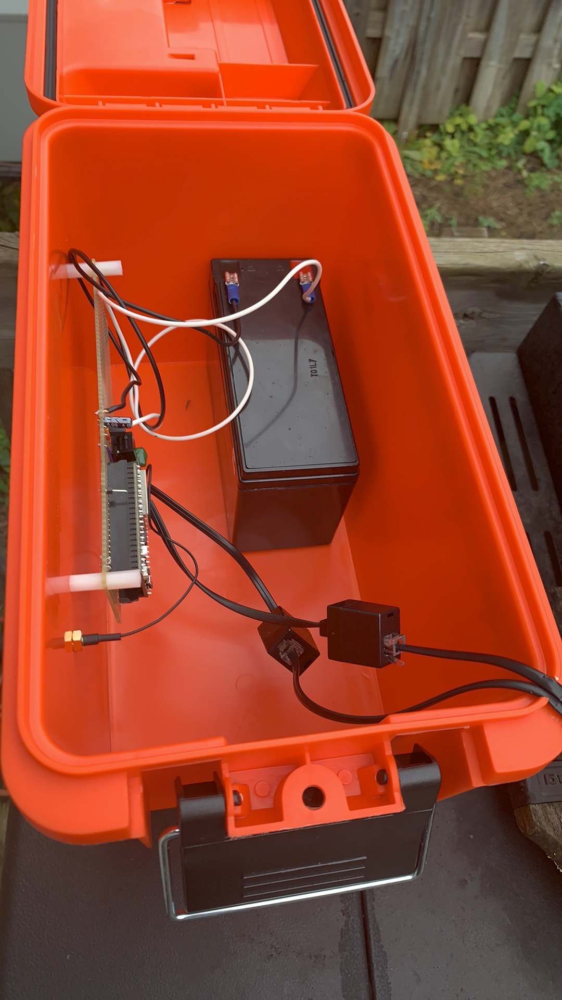
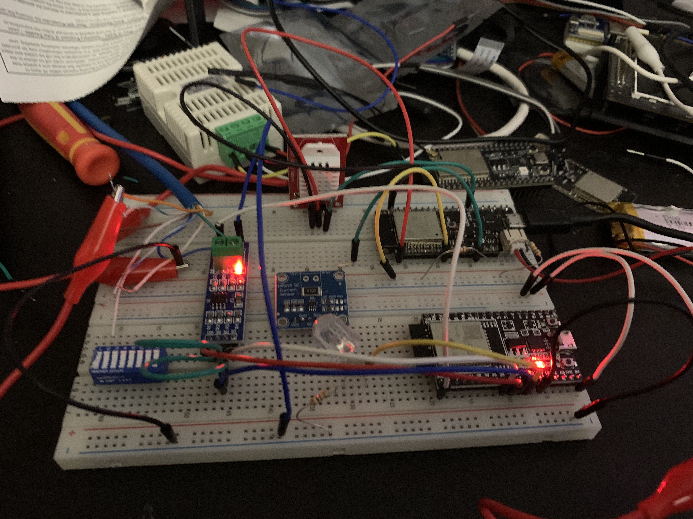
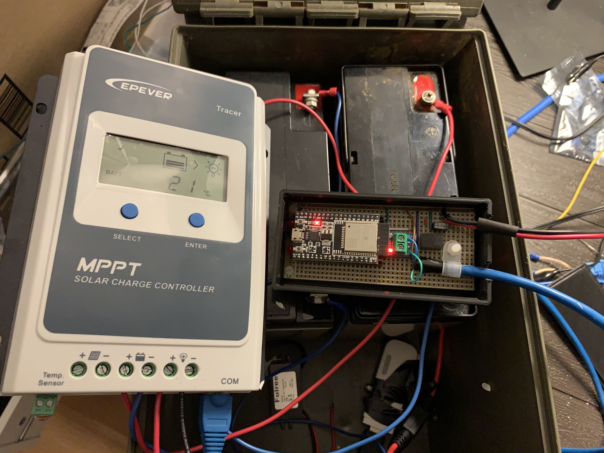

The Trail Monitoring System
Motivation
The system provide two pieces:
- answers the question: Are the trails muddy? Should they be open?
- informs uses via the internet and electronics trailhead signs that the trails are open or closed
The motivation for the project is to be able find out trail conditions without having to travel to the trails to determine if they are muddy, icy, or generally rideable. In Ontario, mountain bike trails are closed to riders to protect the trails from damage and erosion. This project aims to easy the work of volunteers in determining if the trails should be open.
The Story
The details of the system are evolving as the number of sensors and the type of data collected is increasing. Some of the details of the project are outlined in IOT Magazine. Read about the project in the story Why Eat Raspberry PI when Arduino Fruit will do on Medium.com
The ESP32 microcontroller from Espressif has been selected as the system of choice for development.
Technology
Solar Charger
The solar charger is based on a 235W Solarwinds panel driving a EPever Tracer 10 charge controller running a 20AH 24V battery pack. The solar charge is connected to a ESP32 modbus logger and reports data to the Solar Charger Thingspeak Channel.
Website
This website is a static html page based on a theme purchased from Themeforest. The camera currently stores the files locally on disk and makes them available as required. The intent of the camera is for security purposes.Camera
The camera is based in a Raspberry PI W connected to a Raspberry camera. To that board is a one wire temperature sensor and a I2C light sensor. The light sensors allows the Raspberry PI to detect the amount of light and adjust the camera's exposure. An I2C voltage sensor is used to check the battery voltage. Battery, temperature, and light information is posted to our ThinkSpeak Channel. We want to know when the battery is getting to low and needs some help. We've had the SD card in the Raspberry PI get chewed up when the battery drops out. The voltage sensor allows Raspberry PI to text us when there is a low voltage condition and shutdown the system before the solar charge controller pulls the power to the device.
Future Directions: Sensor Network
Currently under test is a sensor system consisting of soil moisture, soil temperature, and rainfall detection. We plan to build on this system and deploy them throughout the forest using low power radio transmitters to get the data back to the trailhead for transmission to the internet.
Future Directions: Trailhead Signs
Not everyone is on social media. Not everyone knows that the trails are open or closed. We plan to deploy EPaper or LCD internet connected displays at the trailheads to inform users of the trail status. The signs will be connected to the instagram account allowing volunteers to update the trail status in one place and have it reflected everywhere.
Future Directions: Artifical Intelligence
Once we have a large enough sensor network and enough data to process, we will use AI to review the data. The goal is to have sensor network determine if the trails should be opened or closed automatically without human intervention.
We Need Help
If you are interested in participating in the project, we would use help with hardware design, printed circuit board design, software project. We are willing to work with those who have time to learn programming. Willingness to work with Linux, Raspberry PI, Ardrino, Python, and C are skills we can use/offer.
Hit our contact page and send us an email if you are interested or has skills we can use.
Remote Sensor Box
This prototype system uses an ESP32 MCU connected to soil moisture, soil temperature, and rain sensors. The prototype is connecting to the internet via WIFI sending data to Thingspeak directly. This prototype is close enough to the solar array and 3G modem. Future versions will use LORA radios and be able to work anywhere in the forest.
Prototyping
The ESP32 device makes for easy prototyping. The ESP-IDF SDK includes most of the code require to operate the device for the different busses needed. Code is written in C or C++.
ESP32 Modbus logger
Interfacing to the modbus on the EPever controller was a simple matter. The ESP32 reads the read time data from the solar charger, and uploads the data to ThinkSpeak channel.
Prototyping

Used as a prototype for a security camera, this trail camera device is based on a Raspberry PI. Future devices will be developed using the ESP32CAM camera board to run low power cameras anywhere in the forest. While this current version requires a WIFI connection, the future plan is to collect the images locally in the device and retrieve them when required.